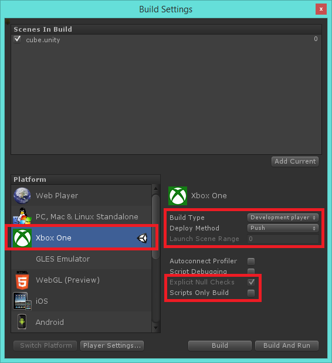

Build Settings
There are some Build Settings for the Xbox One that don't exist for all platforms or behave slightly differently than other platforms.

Build Type
This controls which XboxOnePlayer.exe is used to run your game and how your script code is compiled to native code. The types differ in the optimizations used to build the executables and debugging capabilities are available.
| Differences Between Build Types | || Debug Player | Development Player | Master Player | |:---|:---|:---| | Suitable for XR Submission | no | no | yes | | Compiler/Linker Optimizations | no | yes | yes | | Logging | yes | yes | no | | Can Toggle Script Debugging | yes | yes | no | | Can Toggle Explicit Null Checks | yes | yes | no | | Bytecode stripping possible | no | no | yes |
Deploy Method
This determines how the files are made available on the Xbox One devkit. These terms used are the same as used in the XDK, where you can find more information about the different methods.
- Push: Files are copied to the devkit when you build.
- Pull: Files remain on your PC and are serviced over the network.
- Package: Files are bundled into a package along with the game OS and installed onto the console like a retail app.
Explicit Null Checks
When you access a reference type in your scripts, there are checks for null that happen behind the scenes so that a NullReferenceException can be raised if needed. This is enforced behavior for Debug and Development builds. For Master builds, you can turn off these extra checks. Accessing a null object will result in a native crash.
Scripts Only Build
Turn on this option to skip building your games assets. Only your scripts will be recompiled. This option is only available for Master builds.
Build Package
During development you will often want to work with loose builds for performance reasons. However, all Xbox One games or content is shipped in the form of a package. Packages are a container for numbered chunks. When updating a package, packages get patched on a per chunk basis. This option will build your game as a package with a default packaging manifest generated by Unity. When shipping your game you must build your game with this option and turn on encryption in the Player settings. Please see the Packaging page for more details.
Launch Scene Range
This option will become available if you're using the Package Deploy Method. This defines the scenes that are part of your game package's launch chunk or launch set. The Xbox One will ensure these scenes are present on the console before allowing the player to launch your game.
Using the scene index numbers that show to the right of the scenes at the top of the Build Settings window, you can enter the index number for the latest scene that should be a part of the launch set. That scene and all the scenes before it will also be included. The scene at index 0 must always be included in the launch set.
The rest of your game will continue downloading the background. You can use the StreamingInstall Xbox One Native Plugin to determine when additional chunks arrive and have been installed.
Please see the Packaging page for more details, and the documentation for Unity's Native Plugins for information on controlling Streaming Installation.